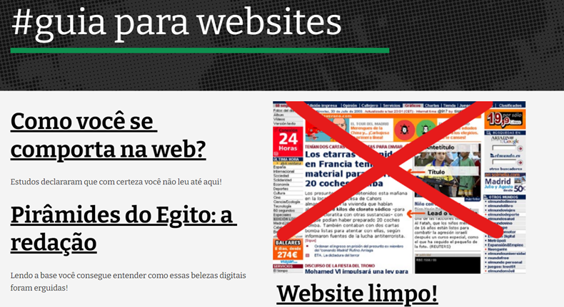
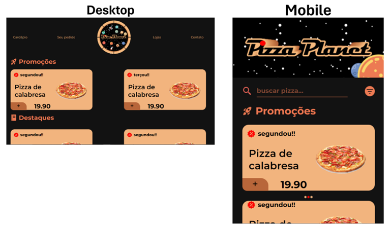
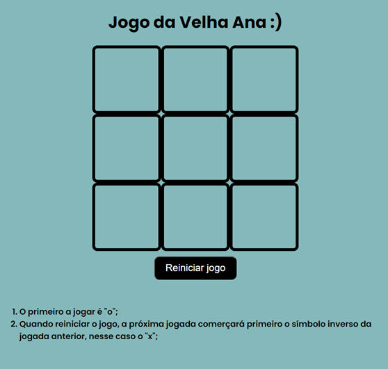
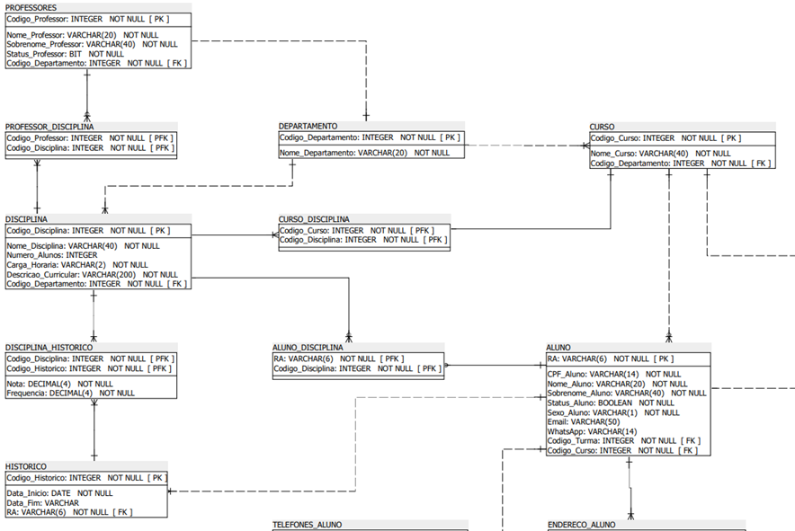

Bem-vindo ao meu portfólio digital!
Olá!
Meu nome é Ana Moura e tenho 23 anos em 2024 e sou apaixonada por UX, UI, design, análise de dados e desenvolvimento de aplicações.
Sou tecnóloga em Sistemas para Internet pela Faculdade de Tecnologia Professor Antonio Seabra e resido na cidade de Lins no estado de São Paulo.
Neste espaço, vou compartilhar meus projetos e a minha jornada no fascinante mundo da experiência do usuário e ciência de dados. Explore meu trabalho e veja como posso ajudar você.
Projetos realizados durante o curso de
Sistemas para Internet da FATEC Lins
1º Semestre - Guia para Websites
Conhecimentos:
- Usabilidade;
- Redação para a web;
- Planejamento de produção de conteúdo textual;
- Revisão de conteúdo para aumentar a clareza, refinar o propósito e assegurar a coerência de voz, tom e estilo;
- Marcação semântica de páginas de conteúdo;
- Acessibilidade;
Sobre projeto:
O projeto Guia para Websites tem como contexto a disciplina de Criação de Conteúdo na Web, cursada no segundo semestre do ano de 2021, sob orientação do professor Dr. João Luís Cardoso de Moraes. O objetivo do site é organizar seu conteúdo em formato de artigos, visando chamar e manter a atenção dos usuários durante toda a leitura. Adaptações gramaticais específicas para a web foram aplicadas, tornando o conteúdo mais escaneável e direto.
Clique aqui para ler o projeto completo, ir para o capítulo 2.2º Semestre - Pizza Planet
Conhecimentos:
- Linguagem de Marcação de HiperTexto (HTML);
- Folhas de Estilo em Cascata (CSS);
- Responsividade;
- Criação de identidade visual;
- Acessibilidade;
Sobre projeto:
O site Pizza Planet foi construído para atender aos requisitos da ementa da disciplina de Padrões de Projeto de Sítios Internet II, do primeiro semestre do ano de 2022, ministrada pelo professor Ricardo Honorato. O projeto inclui a criação de um site para o restaurante fictício Pizza Planet, com funcionalidades como visualização do cardápio, endereços das lojas e formas de contato, além de técnicas avançadas de HTML e CSS para garantir acessibilidade e responsividade.
Clique aqui para ler o projeto completo, ir para o capítulo 3.3º Semestre - Jogo da Velha Ana
Conhecimentos:
- Linguagem de Marcação de HiperTexto (HTML);
- Folhas de Estilo em Cascata (CSS);
- JavaScript e manipulação do Document Object Model (DOM);
Sobre projeto:
No segundo semestre do ano de 2022, na disciplina de Programação de Sítios Internet, lecionada pelo professor Dr. Alciano Oliveira, houve a necessidade de criar um site para trabalhar a linguagem de programação JavaScript e manipular o Document Object Model (DOM). O projeto Jogo da Velha Ana foi desenvolvido como uma aplicação prática das linguagens HyperText Markup Language (HTML), Cascading Style Sheets (CSS) e JavaScript, com foco na manipulação do DOM para criar uma interface interativa. Este projeto exemplifica como é possível combinar essas tecnologias para desenvolver uma aplicação web dinâmica e funcional, proporcionando uma experiência de usuário envolvente e intuitiva.
Clique aqui para ler o projeto completo, ir para o capítulo 4.4º Semestre - Faculdade
Conhecimentos:
- Modelagem conceitual, lógica e física de um banco de dados;
- Regras de negócio no Banco de Dados;
- Modelo de Entidade Relacionamento (MER) e Diagrama Entidade-Relacionamento (DER);
- SQL;
- SGBD MySQL Workbench;
Sobre projeto:
Este projeto aborda a criação, modelagem e programação de um banco de dados para uma faculdade fictícia, como parte da disciplina de Banco de Dados e Internet II, no primeiro semestre do ano de 2023. O objetivo é gerenciar operações educacionais como a manutenção, criação e remoção de informações de alunos, professores, cursos, disciplinas, histórico escolar e turmas.
Clique aqui para ler o projeto completo, ir para o capítulo 5.5º Semestre - Elysium
Conhecimentos:
- Desenvolvimento mobile para Android;
- Desenvolvimento front-end e back-end;
- Linguagem de Marcação de HiperTexto (HTML);
- Folhas de Estilo em Cascata (CSS);
- Linguagem de programação JavaScript (JS), manipulação do Document Design Model (DOM);
- Node.js com JavaScript, express.js para API;
- UX Research, persona, UX, UI e teste de usabilidade;
- Padrão de projeto, casos de Uso, requisitos funcionais e não funcionais;
- Modelo de Entidade-Relacionamento (MER);
Sobre projeto:
Desenvolvido no segundo semestre do ano de 2023 nas disciplinas de Tópicos Especiais em Sistemas para Internet II e Projeto de Prototipagem e Testes de Usabilidade, este aplicativo visa solucionar problemas técnicos administrativos do fictício Instituto Tecnológico Elysium. A migração dos sistemas para uma única plataforma mobile buscou modernizar e otimizar processos, além de melhorar a experiência dos alunos.
Clique aqui para ler o projeto completo, ir para o capítulo 6.6º Semestre - Saúde Móvel
Conhecimentos:
- Empreendedorismo, criação de novo negócio e ferramentas de desenvolvimento de negócios;
- 5 Forças de Porter e Business Model Canvas;
- Aplicativo Móvel;
- Folhas de Estilo em Cascata (CSS);
- Padrão de projeto, requisitos funcionais, requisitos não funcionais, casos de uso e regras de negócio;
Sobre projeto:
O projeto Saúde Móvel foi concebido para enfrentar um problema crítico no sistema de saúde pública brasileira, que é a falta de acesso à informação adequada. Ao conectar as necessidades dos usuários aos serviços de saúde apropriados, o aplicativo visa aliviar a sobrecarga nas unidades de saúde, melhorar a qualidade de vida da população e promover a saúde e o bem-estar conforme os objetivos do Terceiro ODS da ONU. A utilização de ferramentas como as 5 forças de Porter e o Canvas garantiu uma abordagem estruturada e estratégica para o desenvolvimento do negócio, proporcionando uma solução inovadora e eficiente para um problema real da sociedade.
Clique aqui para ler o projeto completo, ir para o capítulo 7.Iniciações Científicas
Conheça o desenvolvimento de uma aplicação web destinada à análise de dados do questionário WEBSAI. Dividido em duas etapas de iniciação científica, o projeto envolveu a criação de uma lógica de programação sofisticada para leitura e limpeza dos dados, bem como a construção de um site utilizando a linguagem R. Esta aplicação não só transforma dados em gráficos programáveis de forma automatizada, como também otimiza o processo de visualização e análise, economizando tempo e recursos.
Convido você a ler o projeto na íntegra e descobrir como a linguagem R foi empregada para criar uma solução tecnológica eficiente e acessível. Com resultados impressionantes, o site está disponível para qualquer usuário interessado, basta clicar aqui. Esta aplicação é ideal para quem possui a base de dados do questionário WEBSAI e busca facilitar a leitura e análise dos seus resultados.
Para ler o relatório das IC (clique).
Clique aqui para visualizar o site.
Acesse o projeto no Github. Você poderá ver os códigos fontes
Soft Skills
Habilidades de comunicação, trabalho em equipe, gerenciamento de tempo e resolução de problemas.
Hard skills
UX, UX Research e UI: conhecimento em User Experience (UX) e User Interface (UI), pesquisas e testes de usabilidade.
Gestão de projetos: experiência nas metodologias Scrum e Kanban.
Redação técnica: criação de manuais, relatórios e documentação de software.
Análise de dados: conhecimento em estatística descritiva e no uso de ferramentas como Excel e R para a manipulação e análise de dados. Uso da linguagem R para análise e criação de visualizações de dados.
Desenvolvimento de aplicações com R: Criação de aplicativos web com R e Shiny.
Desenvolvimento Front-end: HTML, CSS e JavaScript.
Desenvolvimento Back-end: Conhecimento em Node.js para construir aplicações de servidor com JavaScript, Express.js para facilitar a criação de APIs e servidores web, e ORM com Prisma para interagir de forma eficiente com bancos de dados.
Desenvolvimento mobile multiplataforma: desenvolvimento usando a ferramenta Cordova com as linguagens do front-end HTML, CSS e JavaScript.
Desenvolvimento mobile para Android: Android Studio com Java e Kotlin.
Banco de dados: SQL, modelagem de dados, MySQL Workbench, SQLite, PostgreSQL.
Design gráfico: Adobe Photoshop e CorelDraw.
Certificados
Por área
UX, UI e Design:
- (Design)
- Design: elementos fundamentais da linguagem visual. Carga horária estimada em 12 horas. Alura Ensino Online. 2022.
- Design Gráfico com Gestalt: desenvolva um projeto gráfico. Carga horária estimada em 8 horas. Alura Ensino Online. 2022.
- Cores para Designers: escolhendo e trabalhando com cores em um projeto. Carga horária estimada em 8 horas. Alura Ensino Online. 2022.
- Cores: sistemas básicos e paletas. Carga horária estimada em 20 horas. Alura Ensino Online. 2022.
- (UI)
- Figma: design visual de um site mobile. Carga horária estimada em 10 horas. Alura Ensino Online. 2022.
- Figma: conhecendo componentes da interface. Carga horária estimada em 10 horas. Alura Ensino Online. 2022.
- Figma: Trabalhando na construção de um design system. Carga horária estimada em 12 horas. Alura Ensino Online. 2022.
- (UX Research)
- UX Research: entrevistas com equipes internas. Carga horária estimada em 6 horas. Alura Ensino Online. 2022.
- UX Research: entrevistas com usuários. Carga horária estimada em 8 horas. Alura Ensino Online. 2022.
- UX Research: análise de concorrentes. Carga horária estimada em 8 horas. Alura Ensino Online. 2022.
- UX Research: metodologias e imersão em pesquisa. Carga horária estimada em 10 horas. Alura Ensino Online. 2022.
- UX Research: mapeando a jornada do usuário. Carga horária estimada em 8 horas. Alura Ensino Online. 2022.
- UX Research: avaliação heurística. Carga horária estimada em 8 horas. Alura Ensino Online. 2022.
- Teste de usabilidade parte 1: seu produto é fácil de usar? Carga horária estimada em 3 horas. Alura Ensino Online. 2022.
- Teste de usabilidade parte 2: mensurando e entregando resultados. Carga horária estimada em 4 horas. Alura Ensino Online. 2022.
- (UX)
- UX: entenda a experiência de usuário. Carga horária estimada em 8 horas. Alura Ensino Online. 2022.
- Design Thinking: viabilizando soluções. Carga horária estimada em 8 horas. Alura Ensino Online. 2022.
- UX Strategy: divergindo e afunilando ideias. Carga horária estimada em 12 horas. Alura Ensino Online. 2022.
- UX Writing: escrevendo textos para usuários. Carga horária estimada em 8 horas. Alura Ensino Online. 2022.
- UX Usability: Facilite a vida do seu usuário no mobile. Carga horária estimada em 10 horas. Alura Ensino Online. 2022.
- UX Acessível: projetando interfaces inclusivas. Carga horária estimada em 6 horas. Alura Ensino Online. 2022.
- UX Produto: monitore, mensure e teste o seu projeto. Carga horária estimada em 2 horas. Alura Ensino Online. 2022.
- Revisão UX: ferramentas do briefing ao protótipo. Carga horária estimada em 6 horas. Alura Ensino Online. 2022.
Análise de dados:
- Estatística I: Entenda seus dados com R. Carga horária estimada em 8 horas. Alura Ensino Online. 2023.
- R: análise de dados. Carga horária estimada em 8 horas. Alura Ensino Online. 2023.
- (I/O) com R: formatos diferentes de entrada e saída. Carga horária estimada em 8 horas. Alura Ensino Online. 2023.
- Análise e visualização de dados: ciência de dados com R. Carga horária estimada em 8 horas. Alura Ensino Online. 2023.
- Excel: domine o editor de planilhas. Carga horária estimada em 10 horas. Alura Ensino Online. 2021.
- Funções com excel: operações matemáticas e filtros. Carga horária estimada em 10 horas. Alura Ensino Online. 2021.
Gestão de projetos e redação de projetos:
- Kanban: análises para implementação. Carga horária estimada em 8 horas. Alura Ensino Online. 2022.
- Agilidade: promovendo a transformação ágil. Carga horária estimada em 6 horas. Alura Ensino Online. 2022.
- Engenharia de requisitos: como levantar, documentar e validar. Carga horária estimada em 6 horas. Alura Ensino Online. 2023.
Desenvolvimento Front-end:
- HTTP: entendendo a web por baixo dos panos. Carga horária estimada em 10 horas. Alura Ensino Online. 2023.
- JavaScript: manipulando objetos. Carga horária estimada em 8 horas. 2023.
- JavaScript: tipos, variáveis e funções. Carga horária estimada em 12 horas. Alura Ensino Online. 2023.
- HTML e CSS: trabalhando com responsividade e publicação de projetos. Carga horária estimada em 6 horas. Alura Ensino Online. 2023.
- HTML e CSS: classes, posicionamento e flexbox. Carga horária estimada em 9 horas. Alura Ensino Online. 2023.
- Acessibilidade web: crie designs inclusivos. Carga horária estimada em 6 horas. Alura Ensino Online. 2022.
- HTML5 e CSS3 parte 3: trabalhando com formulários e tabelas. Carga horária estimada em 8 horas. Alura Ensino Online. 2021.
- HTML5 e CSS3 parte 2: posicionamento, listas e navegação. Carga horária estimada em 8 horas. Alura Ensino Online. 2021.
Desenvolvimento Back-end:
- TypeScript na prática: implemente um projeto completo com TypeScript e módulos. Carga horária estimada em 12 horas. Alura Ensino Online. 2023.
- TypeScript parte 1: evoluindo seu JavaScript. Carga horária estimada em 10 horas. Alura Ensino Online. 2023.
- Node.js: criando sua primeira biblioteca. Carga horária estimada em 12 horas. Alura Ensino Online. 2023.
- Node.js: criando uma API REST com express e MongoDB. Carga horária estimada em 10 horas. Alura Ensino Online. 2023.
DevOps:
- Docker: criando e gerenciando containers. Carga horária estimada em 10 horas. Alura Ensino Online. 2023.
- Linux II: programas, processos e pacotes. Carga horária estimada em 8 horas. Alura Ensino Online. 2022.
- Linux I: conhecendo e utilizando o terminal. Carga horária estimada em 4 horas. Alura Ensino Online. 2022.
- Redes parte 1: conceitos e prática. Carga horária estimada em 10 horas. Alura Ensino Online. 2021.
Banco de dados:
- SQL com MySQL: manipule e consulte dados. Carga horária estimada em 12 horas. Alura Ensino Online. 2023.
- Modelagem de banco de dados relacional: entendendo SQL. Carga horária estimada em 6 horas. Alura Ensino Online. 2023.
- Modelagem de banco de dados relacional: normalização. Carga horária estimada em 6 horas. Alura Ensino Online. 2023.
- Modelagem de banco de dados relacional: modelagem lógica e física. Carga horária estimada em 8 horas. Alura Ensino Online. 2023.
- Modelagem de banco de dados: entidades, relacionamentos e atributos. Carga horária estimada em 8 horas. Alura Ensino Online. 2022.